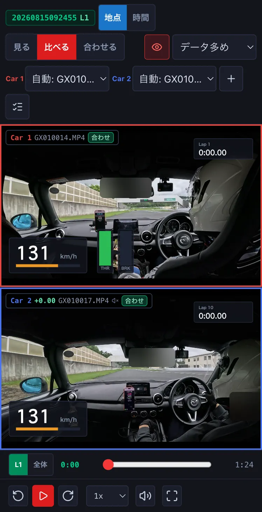
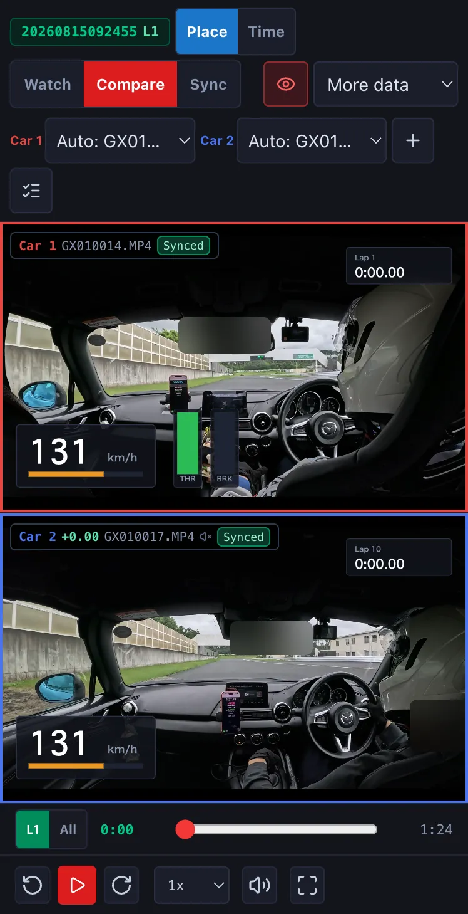
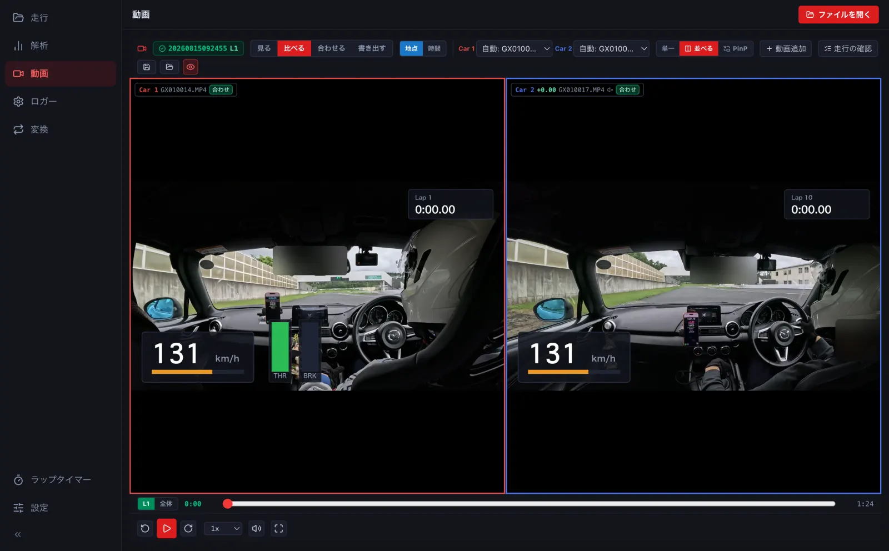
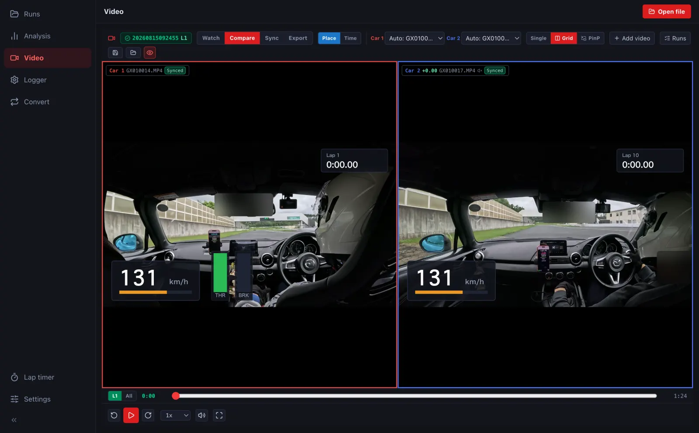

動画で比べるComparing with video
Car 1 と Car 2 の周の動画を、同じ地点を走っているときの場面で並べます。ブレーキの位置やラインの違いが一目で分かります。Show the videos of the Car 1 and Car 2 laps side by side at the same point on track, so braking points and lines are easy to compare.
-
Car 2 を足してから (→ D2)、動画の画面の 比べる を押します。Car 2 の枠の数字は、Car 1 とのタイム差です。After adding Car 2 (→ D2), press Compare on the video screen. The number on Car 2's tile is its time gap to Car 1.




- 地点 は同じ地点の場面を並べます (Car 2 の動画は速さを変えて回します)。時間 は周の始めから同じ経過時間の場面を並べます。Place lines up the same point on track (Car 2's video speeds up or slows down); Time lines up the same time since the lap started.
- Car 1・Car 2 の選びで、枠に出す動画を替えられます。3 台・4 台のときは 2×2 に並びます。Use the Car 1 / Car 2 selectors to change each tile's video. With three or four cars they are shown 2×2.
- 縦のスマートフォンでは上下に並びます。横にしたときや、折りたたみの iPhone を開いたときは左右に並びます (→ H1)。On a phone in portrait they stack vertically; turn it sideways or unfold an iPhone Duo for side by side (→ H1).